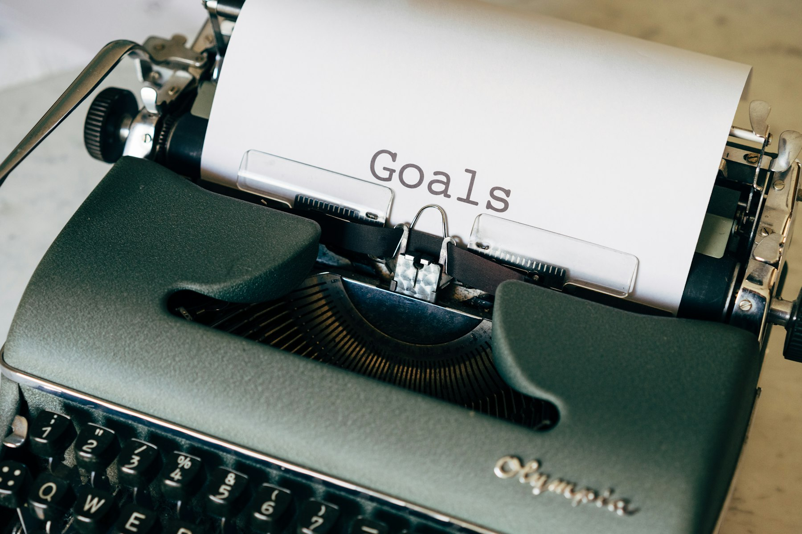
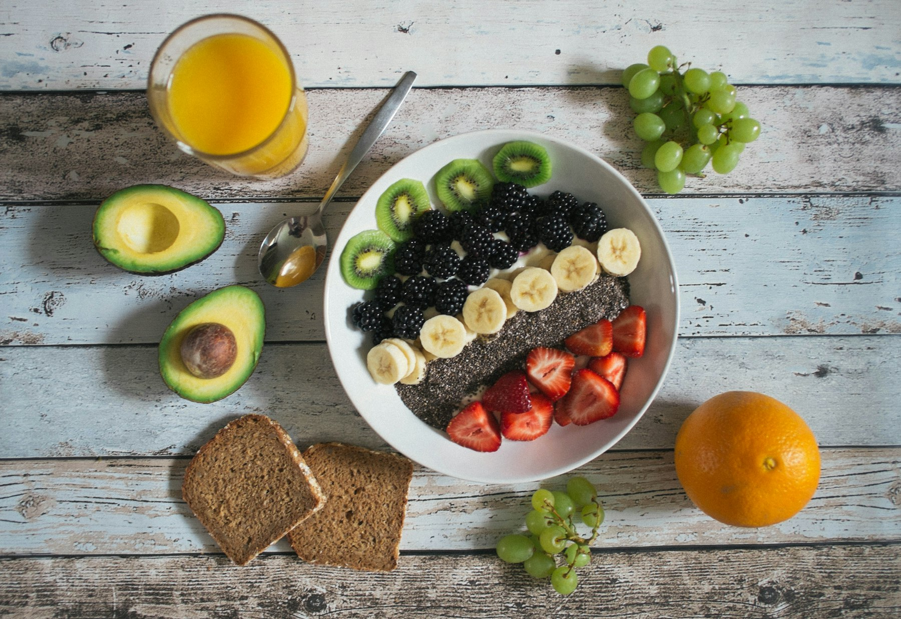

TL;DR
Establishing effective morning habits can significantly impact your success as an entrepreneur. Focus on early rising, exercise, meditation, and planning your day for peak productivity.
Wake Up Early
Waking up early gives you a head start on the day. Many successful entrepreneurs swear by rising before the sun. This quiet time can be used for reflection, planning, or simply enjoying a moment of peace. Start by setting your alarm 15 minutes earlier than usual. Gradually adjust this time until you find the sweet spot that works for you. Use the early hours for tasks that require focus, like writing or strategizing. Consider creating a consistent wake-up routine. For instance, treat yourself to a refreshing glass of water to kickstart your metabolism. This sets a positive tone for the day.
Exercise to Energize
Physical activity in the morning, even a short workout, can boost your energy levels and enhance your mood. Exercise releases endorphins that help you feel more motivated and alert. You don’t need a gym membership to get started. Consider a simple workout at home, like stretching or yoga. If you prefer being outdoors, a brisk walk or jog can work wonders. Set a realistic fitness goal, like exercising for 20 minutes. Find an activity you enjoy to keep it engaging. Remember, consistency is key here for sustainable benefits.
Meditation for Clarity
Meditation can clear your mind and improve focus. Taking just 5-10 minutes each morning to meditate can lead to greater clarity throughout the day. Start by finding a quiet spot where you won’t be disturbed. Focus on your breath or use a guided meditation app to help you stay on track. This practice can help reduce stress and improve your overall mental health. If you’re new to meditation, try to establish a routine. Consistency helps in building mindfulness over time. Eventually, you’ll notice increased focus and a calm approach to challenges.

Plan Your Day
Planning your day is crucial for success. Take time to outline your goals and tasks. This helps prioritize effectively and gives you a sense of accomplishment as you check things off. Start with a simple checklist. Identify three main tasks you want to complete by the end of the day. Break them down further into smaller, manageable steps. If possible, allocate specific times for each task. This creates a structured schedule that can keep you focused and organized throughout the day.

Healthy Breakfast Choices
Breakfast is often called the most important meal of the day for a reason. A nutritious breakfast fuels your body and mind, boosting productivity. Consider incorporating whole grains, fruits, and proteins into your morning meal. Foods like oatmeal, eggs, or smoothies can provide long-lasting energy. Plan your breakfast in advance or make it the night before to save time in the morning. This ensures you start your day on the right foot without skipping meals.
Limit Distractions
To maximize your productivity in the morning, limiting distractions is crucial. This can be as simple as putting your phone on silent or using apps that block social media during your working hours. Create a focused workspace. Having a tidy environment can help keep your mind clear and focused. During your work sessions, use techniques like the Pomodoro Technique to maintain concentration. Another approach is to set specific times to check emails or messages. This way, you can stay focused on your tasks without interruptions.
Continuous Learning
Successful entrepreneurs often emphasize the importance of continuous learning. Carve out time in your morning routine to read personal development books, industry news, or podcasts that interest you. Set a goal to read for at least 15-30 minutes daily. This helps you stay informed and can spark new ideas. Keeping knowledge fresh is essential, especially in a rapidly changing business landscape. Consider joining a book club or finding an accountability partner to share insights. Engaging with others can deepen your understanding and keep you motivated to learn.
FAQ
How can I wake up earlier?
Start by setting your alarm just 15 minutes earlier and gradually increase it. Establish a nighttime routine to help you sleep better.
What types of exercise are best for the morning?
Activities like yoga, running, or even walking are great. Choose something you enjoy to make it sustainable.
How long should I meditate?
Even 5-10 minutes can be beneficial. Start small and increase as you become more comfortable with the practice.
What’s a simple way to plan my day?
Create a checklist and prioritize the top three tasks. Break them into smaller tasks to make them more manageable.
What are some healthy breakfast options?
Try oatmeal, smoothies, or eggs. Include a mix of whole grains, protein, and fruit for sustained energy.
Photo credits
- Photo 1: zero take on Unsplash (https://unsplash.com/@zerotake) (https://unsplash.com/photos/silhouette-of-person-sitting-on-chair-near-window-during-sunset-Y4vtLN4RGH4)
- Photo 2: Jozsef Hocza on Unsplash (https://unsplash.com/@hocza) (https://unsplash.com/photos/woman-in-black-tank-top-and-black-pants-walking-on-sidewalk-during-daytime-BTur1pF9FR0)
- Photo 3: Birger Strahl on Unsplash (https://unsplash.com/@bist31) (https://unsplash.com/photos/white-pelican-on-body-of-water-during-daytime-olI66vtMgNo)
- Photo 4: Markus Winkler on Unsplash (https://unsplash.com/@markuswinkler) (https://unsplash.com/photos/black-and-white-typewriter-on-green-textile-LNzuOK1GxRU)
- Photo 5: Jannis Brandt on Unsplash (https://unsplash.com/@jannisbrandt) (https://unsplash.com/photos/fruit-lot-on-ceramic-plate-8manzosDSGM)
- Photo 6: Jeswin Thomas on Unsplash (https://unsplash.com/@jeswinthomas) (https://unsplash.com/photos/man-in-brown-sweater-sitting-on-chair--hgJu2ykh4E)
- Photo 7: Lilly Rum on Unsplash (https://unsplash.com/@rumandraisin) (https://unsplash.com/photos/person-reading-book-white-sitting-iyKVGRu79G4)